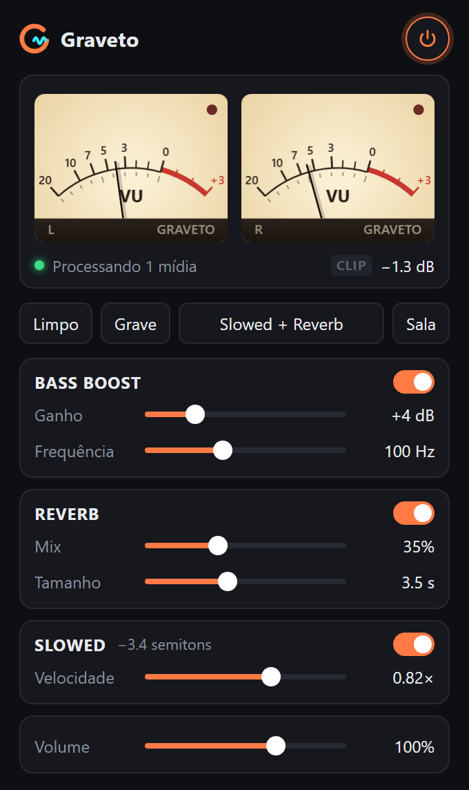
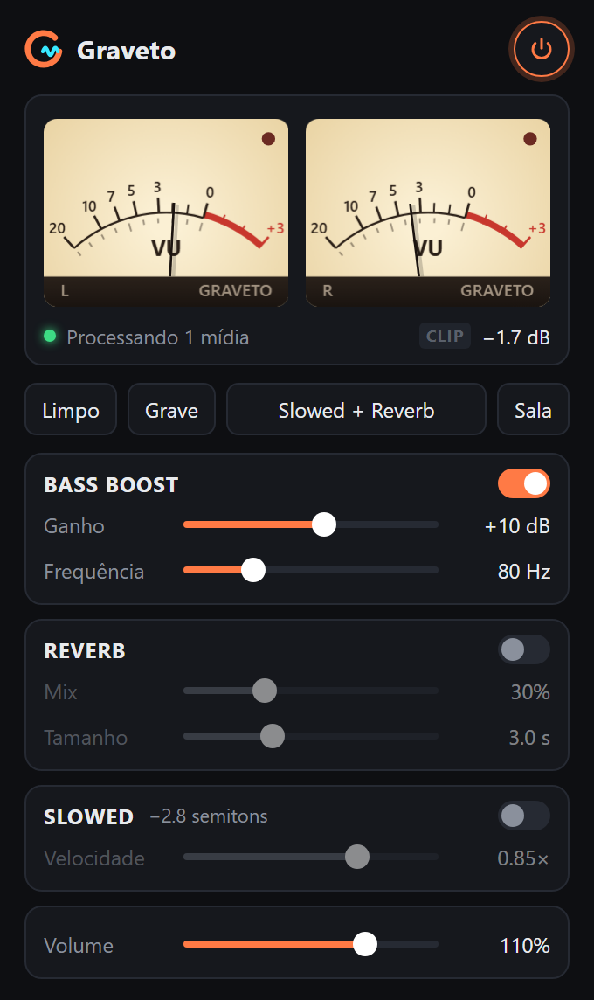

Velocidade, tom e ambiência em um clique — no YouTube, SoundCloud e em qualquer player da web.

Bass boost de até +18 dB com limiter automático segurando os picos, e VU meter estéreo para ver o que você ouve.
